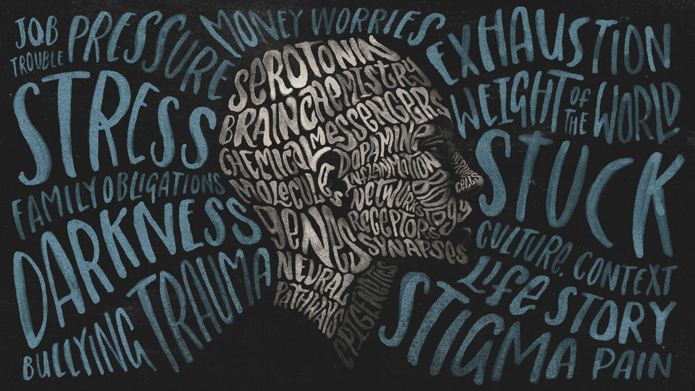
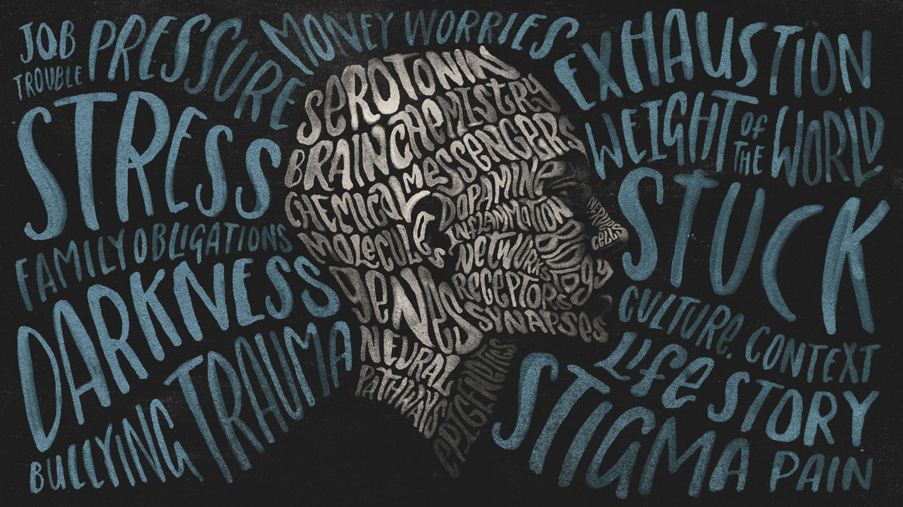

Depression Issues |

Depression Issues |

Depression is a mood disorder that causes a persistent feeling of sadness and loss of interest. Also called major depressive disorder or clinical depression, it affects how you feel, think and behave and can lead to a variety of emotional and physical problems. You may have trouble doing normal day-to-day activities, and sometimes you may feel as if life isn't worth living. More than just a bout of the blues, depression isn't a weakness and you can't simply "snap out" of it. Depression may require long-term treatment. But don't get discouraged. Most people with depression feel better with medication, psychotherapy or both.
Although depression may occur only once during your life, people typically have multiple episodes. During these episodes, symptoms occur most of the day, nearly every day and may include: